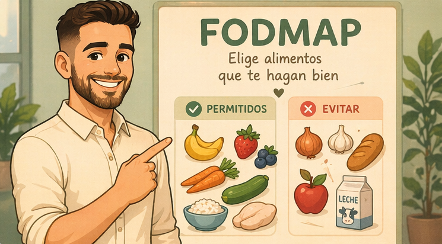

🥚 Proteínas
- Huevos
- Pollo
- Pescado
- Carne fresca
Guía inicial para principiantes
Una página sencilla y visual para entender qué comer, qué evitar, cómo organizar tus comidas cuando estás comenzando.
Ver guíaLa dieta FODMAP es una estrategia de alimentación pensada para ayudar a personas con molestias digestivas como hinchazón, gases, dolor abdominal, diarrea o estreñimiento.
La idea no es “dejar de comer de todo”, sino identificar qué alimentos te sientan mal y cuáles toleras mejor. Por eso normalmente se trabaja por etapas y con observación.

Estas equivalencias ayudan a entender mejor cuánto representa 1 porción dentro del plan de alimentación.
Pan, arroz, pasta, papa, plátano, yuca, tortillas
Carnes, pollo, pescado, mariscos, huevo, queso
Aceites, mantequilla, semillas, nueces
Crudos de ensalada o cocinados como brócoli, ayote, tomate, pepino o chayote
Frutas frescas en porciones moderadas
Opciones tipo leche o yogur según tolerancia
Elige opciones para armar una idea de menú según la estructura del plan de alimentación.
Avena cocida con leche sin lactosa, fresas y semillas.
Arroz, pechuga de pollo y calabacín salteado sin ajo ni cebolla.
Tortilla de huevo con espinaca y una porción de papa cocida.
Galletas de arroz con queso sin lactosa.
Explora ideas prácticas por categoría para desayunos, meriendas, comidas principales y preparaciones caseras.
Opciones para acompañar pancakes, tortillas, snacks o desayunos.
Suave, simple y de las mejores opciones para empezar.
Una opción fresca y con buen sabor para variar.
Ligera y cítrica, ideal en pequeñas cantidades.
Buena para dar variedad y combinar con pancakes.
Opción rica y visualmente muy bonita para la web.
Usar con cuidado y según tolerancia individual.
Estas jaleas están pensadas como opciones caseras y simples. La tolerancia puede variar según la fruta, la porción y la respuesta individual.
Opciones fáciles para desayunos o meriendas con acompañamientos suaves.
Base simple para acompañar con fruta o jaleas caseras.
Una de las combinaciones más prácticas y amigables.
Opción con más saciedad para media mañana o merienda.
Opción simple, visual y fácil de digerir.
Los toppings deben mantenerse simples y en porciones moderadas. Las opciones con fruta baja en FODMAP, jaleas caseras suaves y mantequilla de maní suelen ser las más prácticas.
Opciones simples, prácticas y amigables para iniciar el día.
Base ideal del desayuno, fácil de digerir y muy completa.
Opción clásica, sencilla y muy práctica.
Ideal para variar el desayuno sin complicarse.
Opción recomendada por la nutricionista.
Mantén el desayuno simple: proteína, una fuente de harina y una grasa saludable. Ajusta según tolerancia individual.
Opciones caseras, simples y fáciles de digerir para comidas principales.
Una opción sabrosa y compatible si la salsa es suave y sin ajo ni cebolla.
Ideal para variar la proteína sin salir de preparaciones simples.
Ligero, simple y muy útil para una cena tranquila.
Una opción completa y muy práctica para almuerzo.
Una fórmula básica para resolver cenas sin complicaciones.
Para estas recetas, procura usar salsas caseras suaves y evitar ajo y cebolla. Mientras más simple sea la preparación, más fácil suele ser tolerarla.
Ideas rápidas y suaves para media mañana, tarde o pre entreno.
Una merienda simple, fresca y muy fácil de preparar.
Opción práctica para una merienda con más saciedad.
Snack rápido y útil cuando quieres algo sencillo.
Ideal para una opción ligera o pre entreno.
Buena opción cuando se quiere algo fresco y ligero.
Una opción sencilla para una merienda más completa.
Las meriendas pueden ser ligeras o un poco más completas. Lo ideal es mantener porciones moderadas y combinaciones simples.
Consejos prácticos para preparar alimentos de forma más amigable con tu sistema digestivo.
Son de los principales detonantes de molestias digestivas.
Sustitúyelos por opciones como cebollino, chile dulce o hierbas suaves como orégano y albahaca.
Mientras más simple sea el plato, mejor tolerancia suele tener.
Evita mezclar muchos ingredientes en una misma comida. Una proteína, un acompañamiento y un vegetal suele ser suficiente.
La cantidad es tan importante como el alimento.
Incluso alimentos permitidos pueden causar molestias si se consumen en exceso. Empieza con porciones pequeñas.
Te permiten controlar mejor los ingredientes.
Evita salsas comerciales. Prepara versiones caseras con tomate, aceite de oliva y especias suaves, sin ajo ni cebolla.
Muchos productos contienen ingredientes ocultos.
Revisa ingredientes como jarabes, edulcorantes, leche o harinas que puedan no ser compatibles con tu dieta.
El exceso puede generar molestias digestivas.
Prefiere aceite de oliva, chía o linaza en cantidades moderadas. Ajusta según tu tolerancia.
Es la mejor forma de controlar lo que comes.
Así puedes evitar ingredientes que no toleras y adaptar cada comida a tus necesidades.
Cada persona tiene una tolerancia diferente.
Si un alimento no te cae bien, incluso si está permitido, ajusta o elimínalo temporalmente.
Estos consejos son una guía general. La tolerancia puede variar según cada persona y las recomendaciones de su profesional de salud.